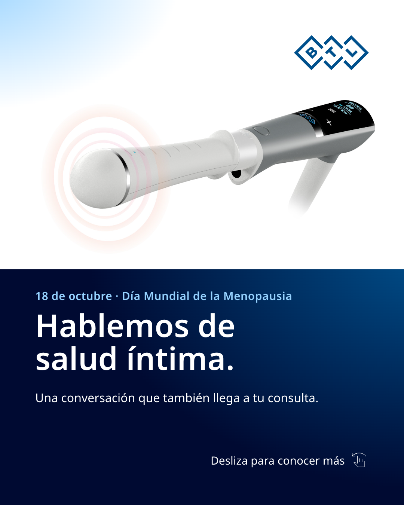
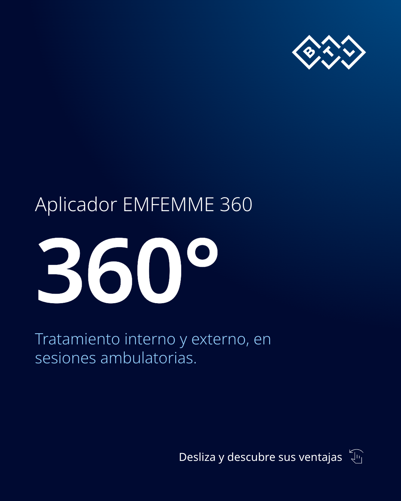
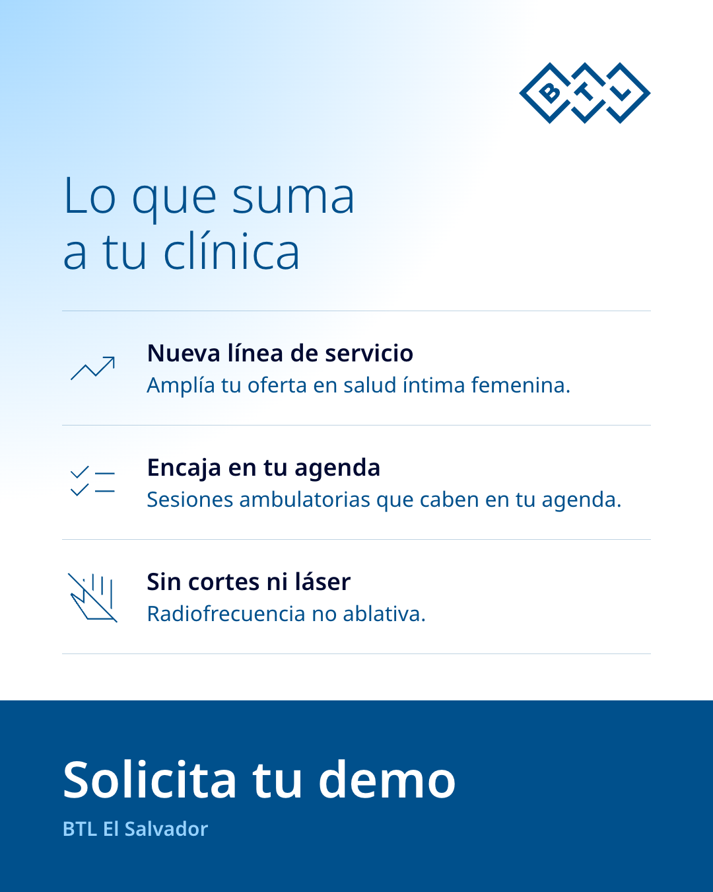

Este 18 de octubre, Día Mundial de la Menopausia, hablemos de una conversación que merece espacio en la consulta: la salud íntima femenina. EMFEMME 360 es un tratamiento de radiofrecuencia no ablativa, sin cortes ni láser, con aplicador de 360° para la zona interna y externa, que se realiza de forma ambulatoria. Una nueva línea de servicio para tu clínica. ¿Quieres incorporarlo en tu clínica en El Salvador? Escríbenos "DEMO" por mensaje directo y agendamos tu demostración. #DíaMundialDeLaMenopausia #SaludÍntima #EMFEMME360 #MedicinaEstética #ElSalvador